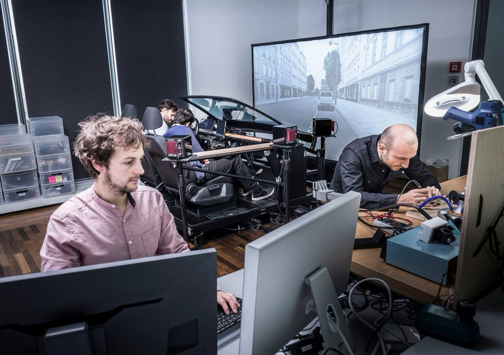
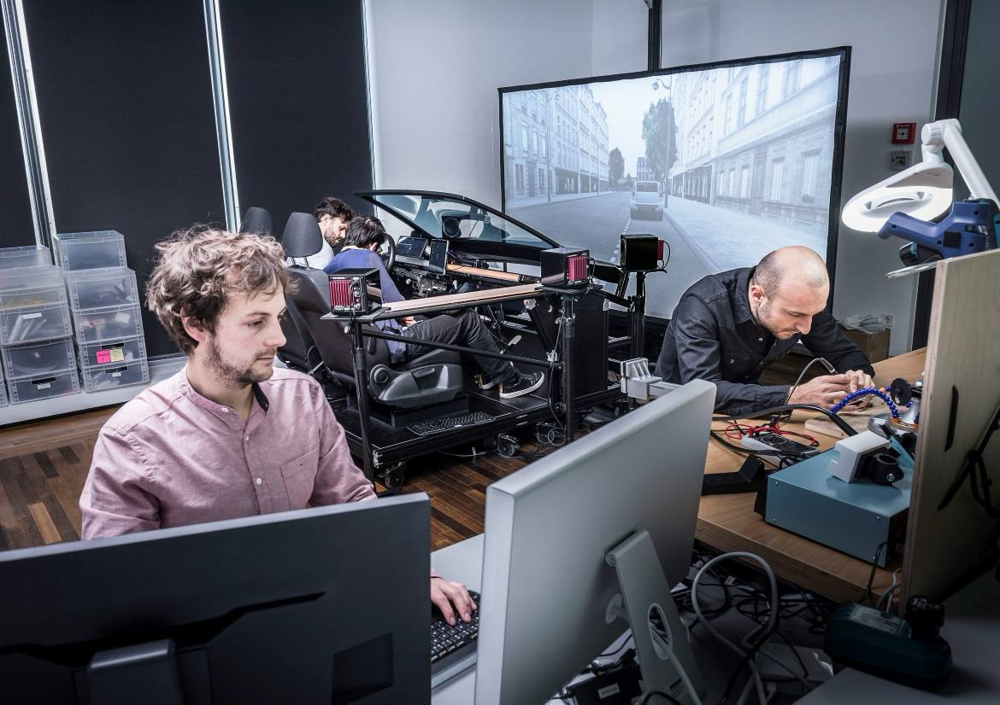

Violet Forest // ⍣٭⋆⋆⍣
⋆⋰⋆⍣٭⍣ scroll → ٭⋆⍣⋆⋰
⋆⋰⋆⍣٭⍣ scroll → ٭⋆⍣⋆⋰
As a Technical Artist for Horizon Worlds, I have been collaborating with engineers to facilitate building Meta's own proprietary game engine. This includes game asset ingestion for animaton, VFX, USD, materials, and scripts. Programs I have been working with include Maya, Blender, PopcornFX, and Perforce. I also made a Mixed Reality prototype for the internal hackathon.


Interactive shaders with shadergraph and scene lighting in Unity. Prototyping with Niantic Lightship.

A Unity game for WebVR and Quest 2/3. I built the game with Unity and integrated it into the website. Game mechanics included picking up objects with raycast, and incorporated a timer that ran out after the house was flooded. I also integrated the assets created by the artist and producer Michelle Brown, and was given creative control over the water shader.
In partnership with Spectacles, I was commissioned to create a Lens for Snap's Augmented Reality glasses. The Lens was released for the Spectacles and for the Snapchat app. I was given full creative control over the project, where I created a sidequest where you could talk to an NPC in the world and be given a quest to gather items using handtracking, and in return of completing the quest you are rewarded with a magic power. The concept was that when AR glasses become so available and uniquitious in the future, there could be an MMORPG-like game where there are NPCs and characters placed in the world that you could interact with throughout your day to level up things like power, armor, weapons, and other attributes.
Glitter Hearts, the latest Lens Project by @violet_forest, puts the user in a sweet AR wonderland. Reach out and collect hearts, spread glitter (and joy), and see the world made even brighter thanks to Violet's imagination brought to life. pic.twitter.com/bbh4Tjv32e
— Spectacles (@Spectacles) January 4, 2022
AR creator @violet_forest is being the change she hopes to see in the world, creating for Spectacles as a way to make the ordinary a little more extraordinary. pic.twitter.com/luTpWhqccG
— Spectacles (@Spectacles) January 5, 2022
I worked part-time on hicetnunc.xyz alongside the founder and other core team members and developers. Hicetnunc is an NFT platform based off of the Tezos blockchain. Since its launch in March 2021, I was helping run the Discord by welcoming and onboarding new artists and helping them with troubleshooting when minting their NFTs, controlling spam and bots, and creating channels / organizing the discord to create an environment where users felt at home.
I was also prototyping and creating new features in javascript/React and fixing bugs. I prototyped a follow feature, a price-hover feature, introduced the masonry layout, and coded the filter function for the primary/secondary market. I was also helping with organizing the Github by answering Github issues and I also wrote the official Github wiki to help onboard artists.
In collaboration with artist and designer Vladimir Hermand, I completed a 3-month fellowship sponsored by Tweag.io's Open Source Fellowship Program, where we built an opensource Open Bionics prosthesis that could be controlled with your phone's front-facing camera.

After a week of conducting user research and virtual interviews to understand the problems from the user's perspective, I was able to design the app and core functionalities for a minimum viable product. Vlad was able to print and assemble the Open Bionics Brunel hand, and I was able to write the code for a Bluetooth Arduino application for the hand that could communicate with a handtracking Android app, so that a user could use their phone and free hand to change the grip of their prosthesis.

We were also able to do in-person user testing with local users in Paris which provided insight into how the product could be improved for the next iteration. At the moment we don't have a next iteration planned but the project is available on Github for anyone to fork or clone. You can see the details of the project here.


A data visualization of the hand made up of 21 3D hand landmarks provided by MediaPipe.
Diagram showing the 3D landmarks and which ones we used to calculate the finger direction vector, the palm normal, and the angle that both form.
The project was featured on the Google Developers Blog. It has a detailed technical overview of how Mediapipe handtracking was integrated into the project.
👋 Control your Mirru prosthesis with MediaPipe hand tracking.
— Google Developers (@googledevs) May 26, 2021
Read the story of how two independent designers took part in @tweagio's Open Source Fellowship program to help provide an affordable alternative to proprietary technology.
Right here → https://t.co/S1x5824ZT6 pic.twitter.com/NPMxBzXZOq
I worked as a full-time employee at Volkswagen Future Center Europe in Berlin, Germany. I collaborated with UX designers and technologists to conceptualize and rapid prototype UX solutions for Level 3-5 self-driving vehicles in private and car-pooling situations.


The following includes some rapid prototyping projects I have worked on:
 


We also collaborated with Porsche on a mixed-reality experience.
I was hired to make a mobile app that can detect the shape of a heart candy & place augmented reality on top of it. This research had led me to experiment with openCVforUnity contour detection, color detection, and training a haar cascade for object detection. In the end I settled on using openCVforUnity contour detection to trigger ARfoundation’s pointcloud feature detection.
My research in computer vision has sparked my interest in machine learning and computer vision in general, and I am continuing my research with things like Google’s new open-source Mediapipe for handtracking, where I collaborated on building an app to control open-source prosthetics with a mobile app.
The Avocados from Mexico Kiosk was an openCV-based Emotion Tracking game featured at SXSW 2017. It was done in-house independent contractor in collaboration with NEXT/NOW agency in Chicago.
The Red Wing Wall of Honor Kiosk consisted of a media-heavy double carousel of video clips, audio clips, and text for 50 different stories. The project was done in collaboration with the designers and creative directors of SOCIALDEVIANT, a creative digital agency in Chicago, Illinois.


I had the privilege to work in collaboration with the developers from agencies Someoddpilot and Branger Briz on the Patagonia Actionworks app.
I also worked with several other design studios in Chicago making desktop and mobile sites.


A portfolio website made for Cara Ellison, game narrative designer / game critic.